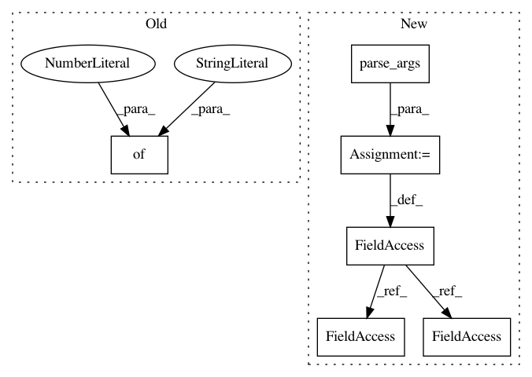

57544b1ff9f97d4da9f64d25c8ea5a3d8d247ffc,rllib/examples/custom_env.py,,,#,70
Before Change
ModelCatalog.register_custom_model("my_model", CustomModel)
tune.run(
"PPO",
stop={
"timesteps_total": 10000,
},
config={
"env": SimpleCorridor, // or "corridor" if registered above
"model": {
After Change
if __name__ == "__main__":
args = parser.parse_args()
ray.init()
// Can also register the env creator function explicitly with:
// register_env("corridor", lambda config: SimpleCorridor(config))
ModelCatalog.register_custom_model(
"my_model", TorchCustomModel if args.torch else CustomModel)
config = {
"env": SimpleCorridor, // or "corridor" if registered above
"env_config": {
"corridor_length": 5,
},
"model": {
"custom_model": "my_model",
},
"vf_share_layers": True,
"lr": grid_search([1e-2, 1e-4, 1e-6]), // try different lrs
"num_workers": 1, // parallelism
"use_pytorch": args.torch
}
stop = {
"training_iteration": args.stop_iters,
"timesteps_total": args.stop_timesteps,
"episode_reward_mean": args.stop_reward,
}
results = tune.run(args.run, config=config, stop=stop)
In pattern: SUPERPATTERN
Frequency: 3
Non-data size: 6
Instances
Project Name: ray-project/ray
Commit Name: 57544b1ff9f97d4da9f64d25c8ea5a3d8d247ffc
Time: 2020-05-11
Author: sven@anyscale.io
File Name: rllib/examples/custom_env.py
Class Name:
Method Name:
Project Name: ray-project/ray
Commit Name: 42991d723fad1d1b698e895969908105ca22f72c
Time: 2020-05-01
Author: sven@anyscale.io
File Name: rllib/tests/test_env_with_subprocess.py
Class Name:
Method Name:
Project Name: hanxiao/bert-as-service
Commit Name: 6ac655533f3faede22d4e44d41a6b6f4b1891ff4
Time: 2019-01-18
Author: hanhxiao@tencent.com
File Name: benchmark.py
Class Name:
Method Name: